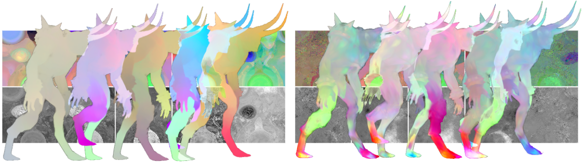
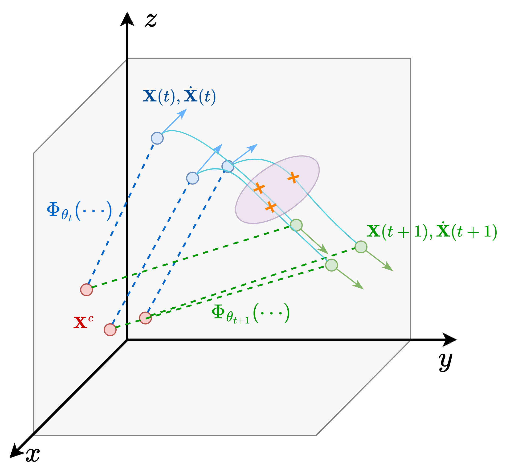
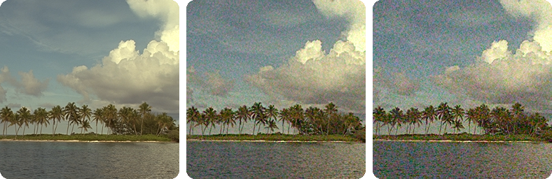

Ph.D. Student between DisneyResearch|Studios & ETH Zürich.
Dynamic scene reconstruction and compression;
Video denoising;
Digital camera noise modeling.

Optimizing your content for video codecs in free-view video compression. A compressed 4D Gaussian scene, decoded and rasterized entirely in your browser — no GPU, no install.
SIGGRAPH ’26 · Conference Track Open the live viewer
To reconstruct dynamic scenes from images, we revisit classic splines and blend them with modern coordinate neural networks. This fusion combines the best of both, achieving smoother temporal transitions and better spatial coherence.
SIGGRAPH ’25 · Conference Track Playground
A generative model for real sensor noise, distilled down to two measured ingredients — an intensity-to-variance curve and a spatial correlation kernel. Regrain your own photographs as five smartphones across fourteen ISO levels, live, on your own CPU.
arXiv ’23 · Preprint Playground